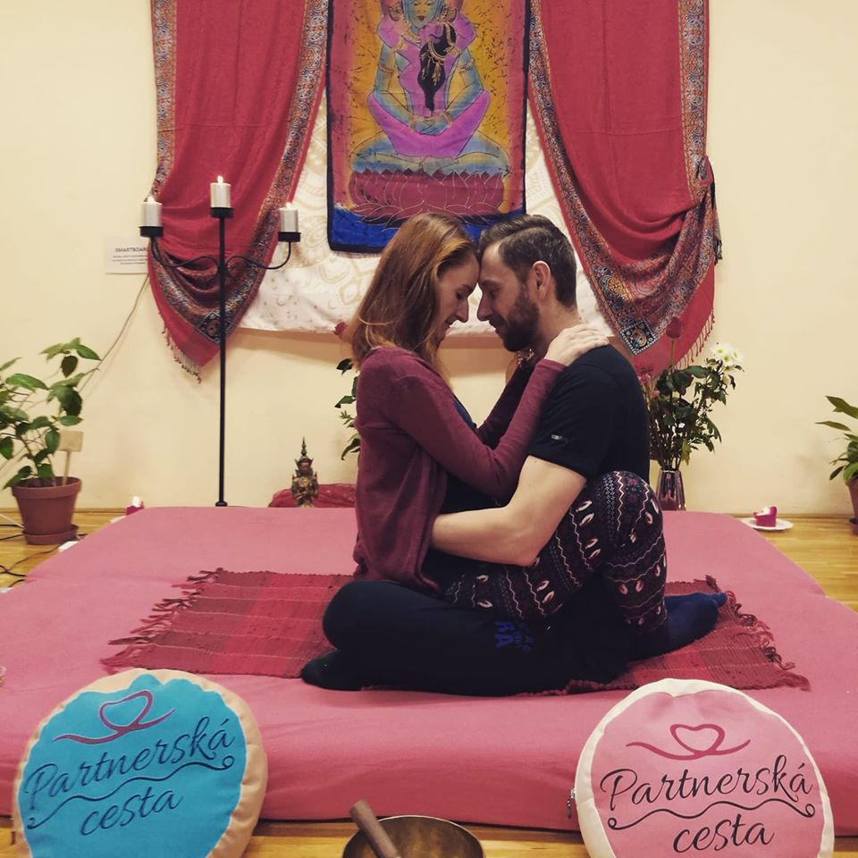
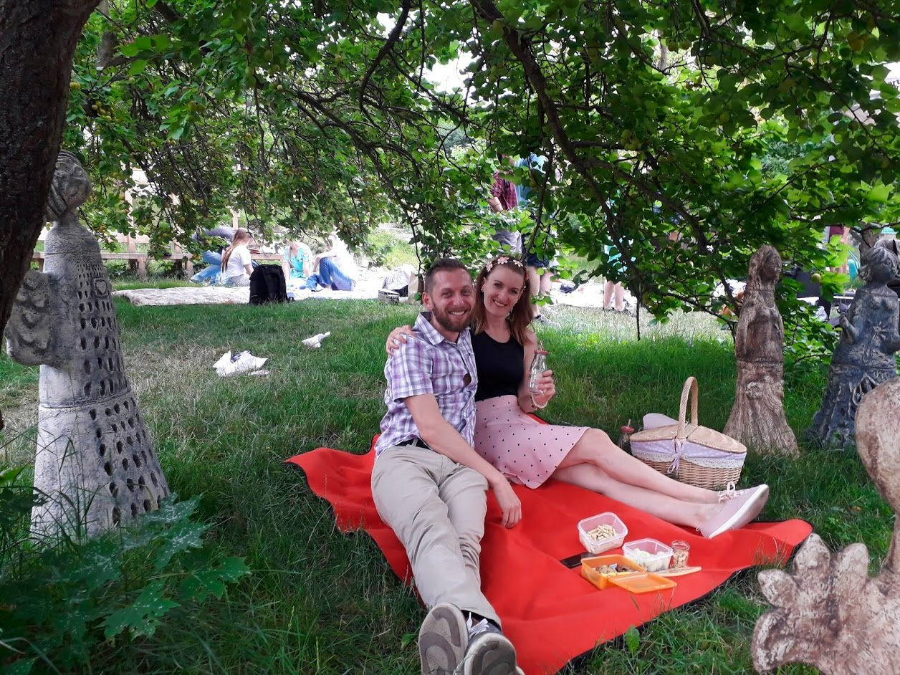
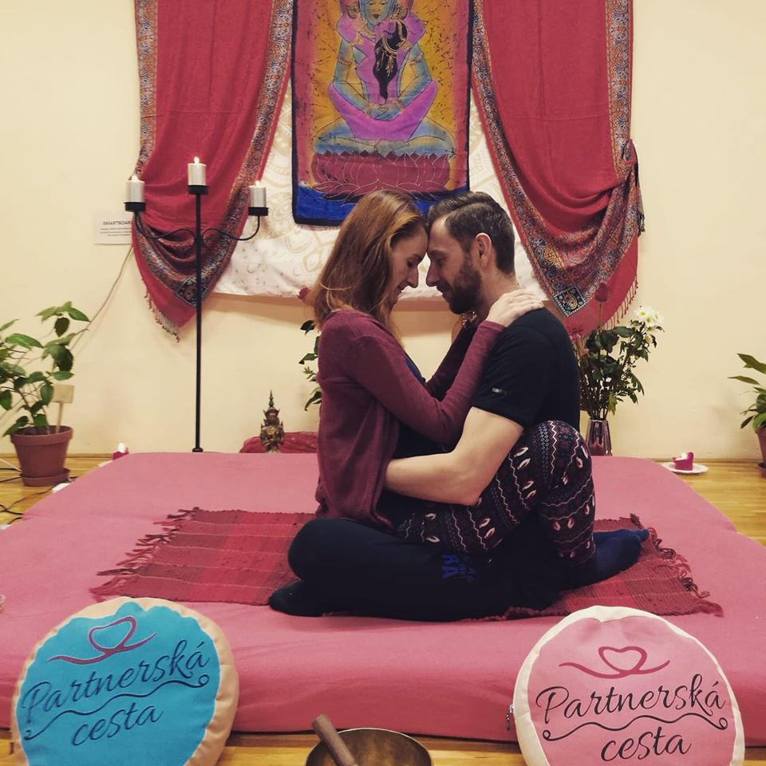
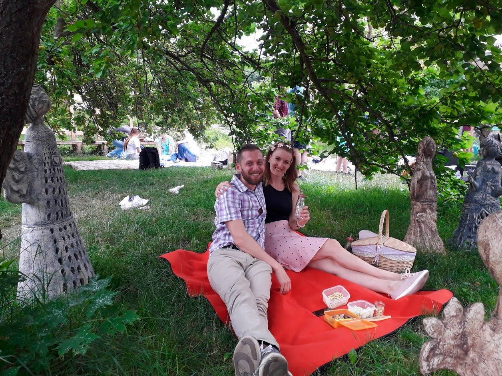

Dnešní zrychlený svět, který chce stále víc a hlavně rychle, nám nedělá dobře. Nevěsta to zjistila až loni přes různé životní patálie a teď za pomoci sebemrskačství a ženicha se učí zpomalovat. Zato ženich, ten to věděl odjakživa, a SLOW je jeho “default” nastavení (mladší generace vysvětlí starším co to je:)
(Nejen) proto jsme se rozhodli pro po-malou svatbu v okruhu rodiny a nejbližších společných přátel. Tak dobře, jsme taky “ti introverti” co nejsou rádi středem pozornosti a upřené zraky mnoha lidí jsou pro nás velkým výstupem z komfortní zóny.
22. srpna 2020
17.6 2018 jsme spolu byli poprvé v Otevřené zahradě, jak jinak než na swingové tančírně. Udělali jsme si piknik pod stromy u tanečního parketu, tancovali jsme a bylo nám v zahradě moc hezky. Toho času jsme za sebou měli jeden malinký rozhovor o svatbě, která reálně ovšem byla ve velmi vzdálených končinách.
I přesto, okouzlena geniem loci a kouzlem okamžiku, pronesla ONA zcela nezávazně ovšem nahlas větu “Tady by se mi jednou líbila svatba”. A Vesmír to slyšel...zdaleka však netušila, že o rok později 7.7.2019 ji její milý požádá o ruku na jeho nejmilovanějším místě na světě - doma v posteli :-) A když svatba začala nabírat jasnější kontury, první místo, které jí přišlo na mysl, byla Otevřená zahrada.
A tak ONA řekla jemu: “Mně by se líbila svatba v Otevřené zahradě !!” A ON odpověděl: “CAJK” :-) ….a bylo vymalováno!
Vzhledem k tomu, že celý obřad a hostina budou probíhat v zahradě, rádi vás uvidíme v polo-formálním oblečení. V zahradě budou k dispozici zahradní židličky, piknikové deky a lehátka, takže prosím čekejte spíš zahradní slavnost než nějaké formality.
Chceme, abyste se cítili hlavně pohodlně, a proto je více než vítané lehké letní oblečení. Ženy s letními šaty nebudou mít dilema, ale pokud by snad muži váhali zda vzít uzavřené boty a oblek v parném srpnu, my vás rádi uvidíme svobodné v košilích s krátkým rukávem, ve společenských bermudech a třebas s dřevěným motýlkem a kšandami. Opékat na rožni chceme jiné pochutiny a ne vás. Pojďme se společně procházet bosky po letní trávě a posedět na dece pod stromy.
Největším darem pro nás bude vaše přítomnost. Pokud byste přece jen neodolali nutkání hmotného daru, budeme nejradši za nějakou tu korunku, kterou použijeme na svatební cestu.
Naše svatba by vám mohla v některých ohledech připadat trochu netradiční. Rozhodli jsme se mít náš svatební den v souladu s tím, co máme v životě rádi, jací jsme a jakou cestou společně jdeme.
Jak někteří z vás víte, společně jsme absolvovali “alternativní/ezoterický” program Partnerská cesta. Nadále navštěvujeme podobné “spirituální” akce a považujeme je za důležitou součást naší cesty vpřed. Proto jsme se rozhodli na místo klasického obřadu projít přechodovým svatebním rituálem. Náš obřad povedou “duchovní průvodci”, s kterými zatím tvoříme jeho konkrétní podobu.
 


